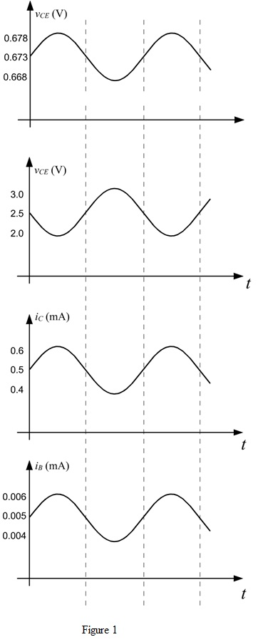

(b)
Write the expression for the voltage gain.
Substitute for .
Thus the collector to emitter voltage  is
is  .
.
Refer to Figure 6.33 (a) in the text book.
(a)
Write the expression for the theoretical maximum voltage gain.
.
Substitute for .
Thus, the theoretical maximum voltage that the amplifier can produce is .
(b)
Write the expression for the voltage gain.
Substitute for .
Thus the collector to emitter voltage is .
(c)
The dc collector current is 0.5 mA.
Determine the collector resistance, .
.
Thus, the resistance at the collector is .
(d)
Write the expression for the collector current,  .
.
Substitute for .
.
Simplify further.
Thus, the base to emitter voltage  of the transistor is .
of the transistor is .
(e)
Determine the voltage.
Thus, the small signal collector to emitter voltage is .
Determine the collector current .
Thus, the current that is super imposed on  is .
is .
(g)
Determine the base current  .
.
Thus the base current of the transistor is .
The small signal base current of the transistor is,

Thus, the base current of the transistor is .
(h)
Write the expression for the incremental input resistance of the amplifier.
 .
.
Substitute for and for .
for and for .
Thus, the incremental input resistance is .
Sketch the waveforms for .

Thus, the graphs are sketched.